貓的腎上腺疾病：高醛固酮症、多激素與性激素分泌腫瘤
主講：Daniel K. Langlois, DVM, DACVIM｜密西根州立大學（MSU）獸醫學院內科教授
VET-KU × Texas A&M 內科研討會｜場次 22｜Langlois Lecture 5
目前是講義版：還沒有課堂錄音與逐字稿。講者在課堂上公布的答案（例如「哪一隻貓是 PHA」）之後會補上。
⭐ 必記原則
- 狗的功能性腎上腺腫瘤以皮質醇為主；貓則以醛固酮最常見，其次是多激素腫瘤
- 貓 PHA 兩大臨床特徵：高血壓、多發性肌病（MSU：頸部腹屈 33%、後肢無力 25%，更多只是沒精神）；三大生化特徵：低血鉀、CK 升高、代謝性鹼中毒
- 低血鉀＋高血壓常被歸給 CKD 或甲亢，但甲亢很少造成嚴重高血壓或嚴重低血鉀；CKD 除非很嚴重或厭食，也少見嚴重低血鉀
- 中老年、低血鉀又高血壓的貓都該驗 PHA；單獨低血鉀或單獨高血壓（>180 mmHg）也要考慮
- 實務診斷：低血鉀當下測醛固酮。>1000 pmol/L 強烈懷疑（約 90% 病貓）；800–1000 可疑；400–800 不太像腫瘤
- 再加上超音波找到腎上腺腫塊。醛固酮／腎素比在美國買不到，抑制試驗的價值仍不明
- 手術可治癒，腺瘤與腺癌的中位存活都是 1–3 年；但病貓多半是 13 歲上下、有共病，手術費約 4500–5000 美元
- 內科：amlodipine 控血壓、葡萄糖酸鉀補鉀、spironolactone 1–4 mg/kg q24h 拮抗醛固酮
- PHA 貓若有糖尿病或皮膚變化，要驗黃體素／皮質酮：約 1/4 的 PHA 貓黃體素 >10 nmol/L
- 對側腎上腺萎縮＝有糖皮質激素作用，術後可能暫時性 Addison；切除後部分貓糖尿病會緩解
- 貓庫欣：>80% 有糖尿病、>50% 皮膚變薄、1/3 皮膚脆弱；首選 LDDST（劑量是狗的 10 倍），治療首選 trilostane
- 公貓結紮後出現陰莖倒刺、尿臭、亂尿尿：想到分泌雄性素（androstenedione）的腎上腺腫瘤
場次資訊與大綱
▾1. 醛固酮與 Conn 症候群
▾醛固酮的作用與分泌調控
- 主要的礦物皮質素，由腎上腺皮質球狀帶（zona glomerulosa）分泌。
- 作用在腎臟遠曲小管（DRT）與集尿管（CD）：
- 主細胞（principal cells）：再吸收 Na⁺、排出 K⁺
- 間細胞（intercalated cells）：Na⁺/H⁺ 交換（排 H⁺）
- 分泌的主要刺激：血漿 K⁺ 與 RAAS；ACTH 與 Na⁺ 是次要因素。
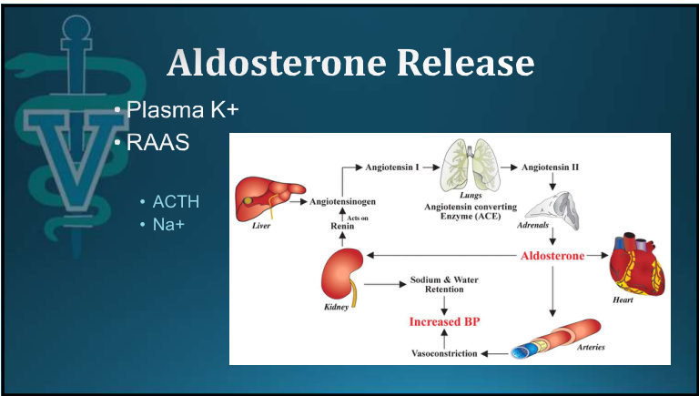
💡 把作用位置記起來，PHA 的三個生化特徵就推得出來：主細胞排 K⁺ → 低血鉀；間細胞排 H⁺ → 代謝性鹼中毒；保鈉保水 → 高血壓。低血鉀再造成低血鉀性肌病與 CK 升高。
Conn 症候群與人類的 PHA
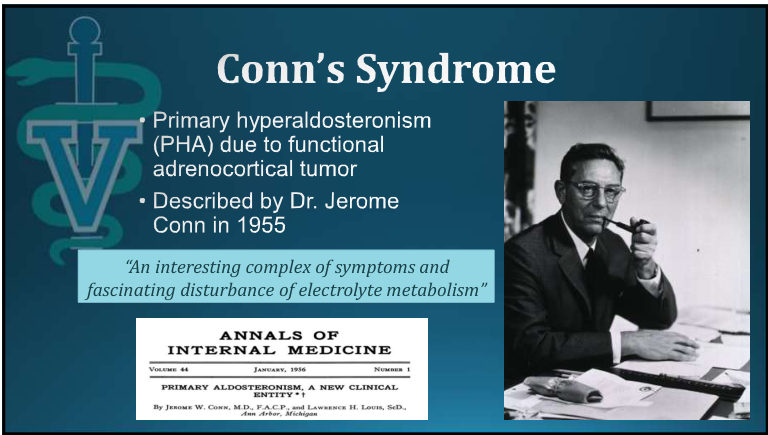
- Conn 症候群＝功能性腎上腺皮質腫瘤造成的原發性高醛固酮症（PHA）。
- 人類 PHA 的病因（由常見到少見）：雙側特發性增生 > Conn 症候群（腺瘤）> 原發性腎上腺增生 > 腎上腺皮質癌 > 家族性 > 異位性（Young 2007）。
- 💡 人類 PHA 以雙側增生為主，貓則以單側腫瘤為主（下一節）。
2. 貓 PHA：病因與盛行
▾第一個病例（1983）
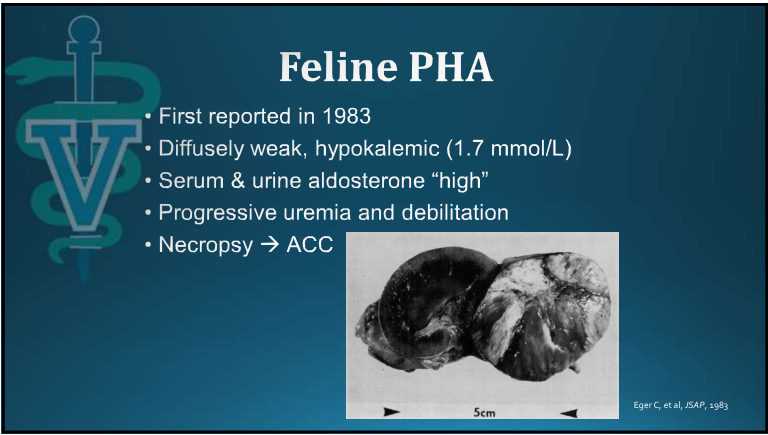
- 1983 年首次報告。
- 全身無力，低血鉀 1.7 mmol/L。
- 血清與尿液醛固酮「偏高」。
- 尿毒症逐漸惡化、身體衰弱。
- 剖檢：腎上腺皮質癌（ACC）。
病因
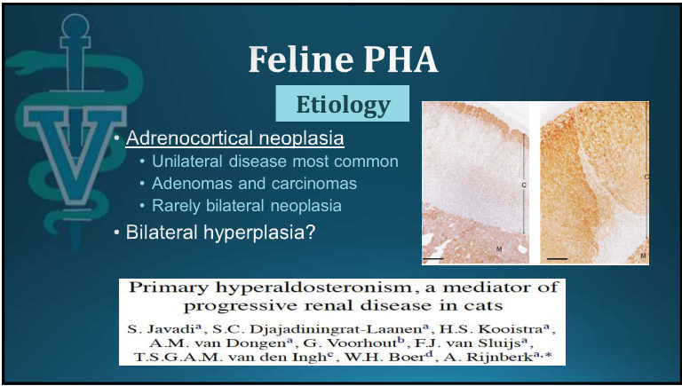
- 腎上腺皮質腫瘤為主：
- 最常見單側
- 腺瘤與腺癌都有
- 少數是雙側腫瘤
- 雙側增生？（問號：存在，但角色仍有爭議）
- 💡 Javadi 等人的論文提出：雙側結節性增生造成的低度 PHA，可能是部分貓 CKD 惡化的推手。這也是 📄 25「氮血症是 PHA 的後果還是巧合？」的背景。
報告越來越多
| 年代 | PubMed 發表數（hyperaldosteronism cat veterinary） |
|---|---|
| 1980–1989 | 1 |
| 1990–1999 | 4 |
| 2000–2009 | 約 10 |
| 2010–2019 | 約 15 |
💡 增加的主要是「有人去驗」，不一定是疾病真的變多。這就是第 5 節「有認知才有診斷」的意思。
3. 三隻貓，哪一隻是 PHA？
▾三隻貓的病史
| Cat 1 | Cat 2 | Cat 3 | |
|---|---|---|---|
| 訊號 | 14 歲 F/S DSH | 9 歲 F/S DSH | 15 歲 M/N DSH |
| 病史（3 個月） | PU/PD、視覺異常、體重減輕 | PU/PD、無力、體重減輕 | PU/PD、嘔吐、體重減輕、食慾增加 |
生化檢驗
| 項目 | 參考值 | Cat 1 | Cat 2 | Cat 3 |
|---|---|---|---|---|
| BUN (mg/dL) | 19–36 | 135 H | 39 H | 33 |
| Creatinine (mg/dL) | 1.0–2.3 | 3.8 H | 2.1 | 1.7 |
| Na (mmol/L) | 145–155 | 148 | 154 | 148 |
| K (mmol/L) | 3.8–5.4 | 3.3 L | 2.2 L | 3.6 L |
| Cl (mmol/L) | 110–123 | 111 | 119 | 111 |
| HCO₃⁻ (mmol/L) | 13–22 | 11 L | 25 H | 18 |
| Ca (mg/dL) | 9.1–10.7 | 10.4 | 10.4 | 10.0 |
| P (mg/dL) | 2.7–5.7 | 6.1 H | 5.0 | 4.5 |
| Mg (mg/dL) | 1.8–2.5 | 2.3 | 2.3 | 2.0 |
| TP／Alb (g/dL) | 6.5–7.8／3.0–3.9 | 6.9／3.4 | 7.0／3.2 | 6.5／3.0 |
| Globulin (g/dL) | 2.8–4.7 | 3.5 | 3.8 | 3.5 |
| Glucose (mg/dL) | 78–143 | 98 | 113 | 140 |
| ALP (U/L) | 13–48 | 44 | 16 | 244 H |
| ALT (U/L) | 25–76 | 52 | 71 | 202 H |
| AST (U/L) | 14–36 | 19 | 30 | 34 |
| CK (U/L) | 46–490 | 388 | 975 H | 404 |
| Chol (mg/dL) | 72–248 | 205 | 172 | 99 |
Amylase、膽紅素皆在參考範圍內，未列出。
哪一隻貓有 PHA？
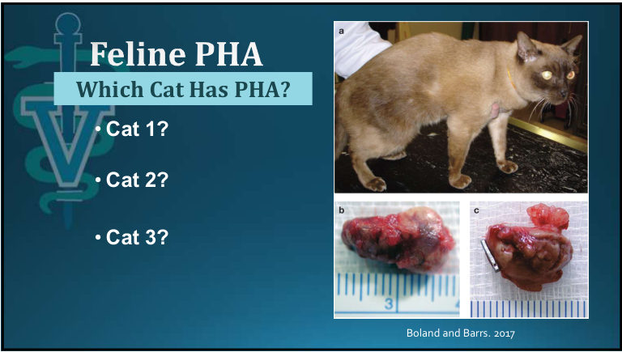
💡 整理者的判讀（講者答案待逐字稿確認）：
- Cat 2 最典型：嚴重低血鉀（2.2）、CK 升高（975）、HCO₃⁻ 偏高（代謝性鹼中毒）、主訴無力，三個生化特徵全中；腎指數只有輕度異常。
- Cat 1 不能排除：看起來像 CKD（BUN 135、Cr 3.8、P 6.1、HCO₃⁻ 11 的酸中毒），但視覺異常是高血壓性視網膜病變的線索（📄 24）。CKD 也會低血鉀，PHA 也會讓腎病惡化（📄 10），而且 PHA 的鹼中毒可能被腎衰竭的酸中毒抵消。
- Cat 3 也不能排除：食慾增加、嘔吐、ALP／ALT 升高，先想甲亢；但輕度低血鉀仍值得驗醛固酮，因為甲亢很少造成明顯低血鉀（📄 27）。
- 📄 21 的標題是「Which Cat Has PHA?」，下一張直接講 PHA 的特徵。講者的用意很可能是：三隻都可能是，只看 CKD 或甲亢的外表會漏診。
4. 臨床與檢驗特徵
▾2 個臨床特徵＋3 個生化特徵
臨床特徵
- 高血壓
- 多發性肌病（polymyopathy）
生化特徵
- 低血鉀
- CK 升高
- 代謝性鹼中毒
低血鉀性肌病
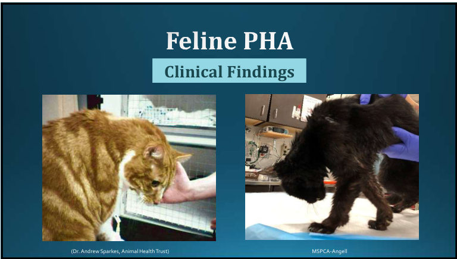
- 投影片是兩隻頸部腹屈（ventroflexion）、低頭站不穩的貓。
- 📸 現場 課堂上這張多了一個文字框，MSU 獸醫醫學中心的資料：
- 33% 的貓有頸部腹屈
- 25% 的貓有後肢無力
- → 非特異性的無力、精神沉鬱是極為常見的主訴
- 💡 典型的低頭姿勢只占 1/3，更多貓只是「沒精神、比較懶」，飼主常以為是老了。老貓精神變差時，驗個血鉀很值得。
- 💡 頸部腹屈是貓低血鉀性肌病的典型姿勢，因為貓沒有項韌帶。其他鑑別：甲亢、硫胺素缺乏、重症肌無力、有機磷中毒。
高血壓的眼部表現
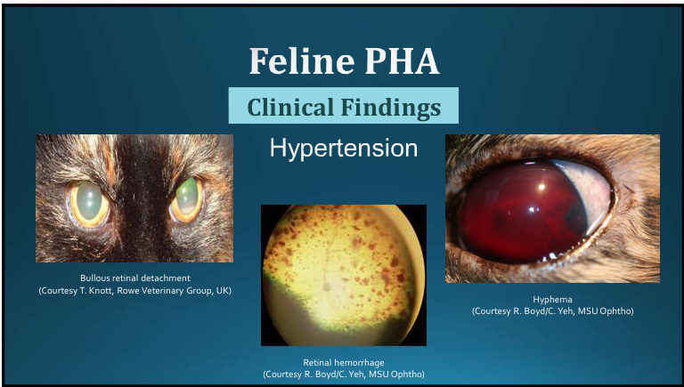
💡 Cat 1 的「視覺異常」就是在提示這個。
其他和高血壓相關的發現
- 氮血症常見：是 PHA 造成的，還是剛好一起出現？
- 心臟病與心雜音常見。
- 可能有神經症狀。
- 摸得到腹部腫塊很少見。
5. 為什麼常被漏診
▾講者的提問
有認知，才有診斷
- 同時有低血鉀和高血壓時，常被歸給 CKD 或甲亢：
- 甲亢很少造成嚴重高血壓或嚴重低血鉀。
- CKD 除非很嚴重，或同時厭食，否則很少造成嚴重低血鉀。
- 高血壓常被歸給 CKD 或特發性／原發性高血壓（在獸醫很少見），沒有深入檢查就開始治療。
6. 診斷檢測
▾醛固酮檢測的選項
- 單次血中醛固酮：要考慮實驗室與檢測方法、生理狀態（例如當下血鉀）。
- 醛固酮／腎素比（ARR）：黃金標準？
- 尿液醛固酮／肌酸酐比（UACR）
- 抑制試驗：「疾病是分泌過多，就試著去抑制它」，用 fludrocortisone 或 telmisartan。
- → 都要搭配影像學。
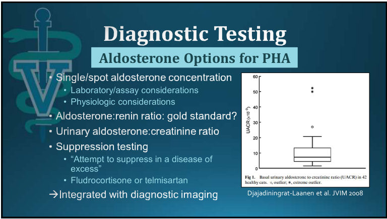
醛固酮／腎素比：黃金標準？
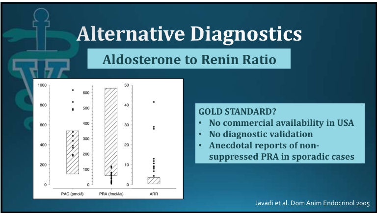
- 美國沒有商業化檢驗。
- 沒有診斷效能驗證。
- 零星病例的血漿腎素活性（PRA）沒有被抑制（傳聞報告）。
💡 理論上原發性高醛固酮的腎素應該被壓低、比值升高；但如果腎素沒被壓低，比值就失去鑑別力。
抑制試驗
| 試驗 | 做法 | 結論 |
|---|---|---|
| Fludrocortisone（尿液） | 0.05 mg/kg PO q12h × 4 天；第 0 天與第 4 天測 UACR | 臨床價值不明：尿液版結果互相矛盾，血清版缺乏後續研究（Djajadiningrat-Laanen 2008、2013；Matsuda 2015） |
| Fludrocortisone（血清／血漿） | 0.05 mg/kg PO q12h × 3 劑；第 0 天與第 2 天測醛固酮 | |
| Telmisartan | 2 mg/kg PO 一次；給藥前與 60／90 分鐘測醛固酮 | 無法區分 PHA 貓與健康中老年貓，或可能有續發性高醛固酮的貓（Fabres et al., JVIM 2023） |
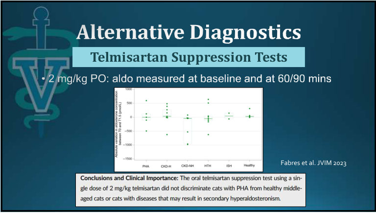
實務診斷
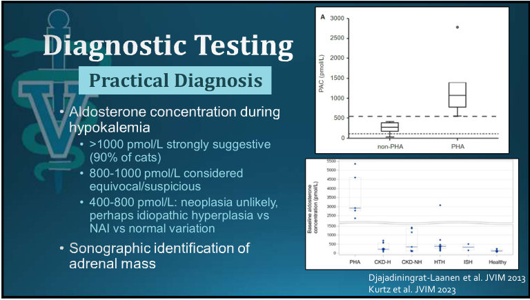
在低血鉀當下測醛固酮：
| 醛固酮（pmol/L） | 判讀 |
|---|---|
| >1000 | 強烈懷疑 PHA（約 90% 的病貓落在這裡） |
| 800–1000 | 模稜兩可、可疑 |
| 400–800 | 不太像腫瘤；可能是特發性增生、非腎上腺疾病（NAI），或正常變異 |
再加上超音波找到腎上腺腫塊。
💡 為什麼要在低血鉀時測：正常貓低血鉀時醛固酮應該被壓低，這時醛固酮還很高就是「不適當」的分泌。補鉀把血鉀拉回來後再測，正常反應和 PHA 會更難區分。
7. 治療
▾手術的考量
手術有機會治癒
- 各研究中位存活 1–3 年
- 腺瘤與腺癌差不多
但是……
- 病貓年紀大（中位數 13 歲）
- 共病多
- 本來的預期壽命？
- 手術費 4500–5000 美元
直接處理腎上腺？Trilostane 或 Lysodren
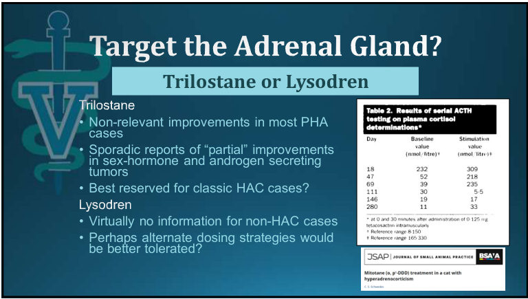
- Trilostane：
- 對大多數 PHA 貓沒有明顯幫助。
- 分泌性激素和雄性素的腫瘤，零星報告有「部分」改善。
- 可能最適合留給典型的庫欣病例。
- Lysodren（mitotane）：
- 庫欣以外的病例幾乎沒有資料。
- 換個給藥方式也許比較能耐受？
內科治療
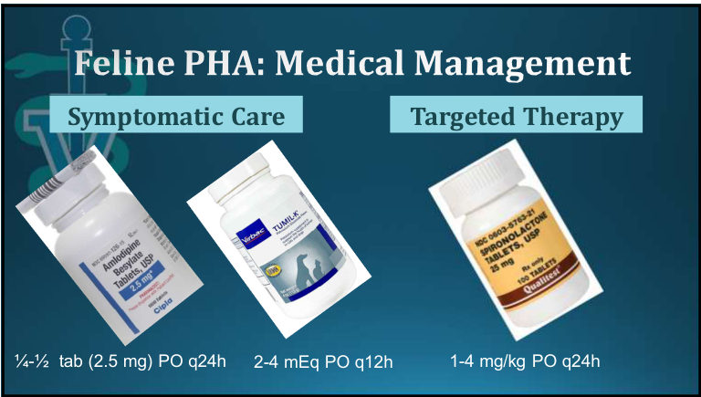
| 類別 | 藥物 | 劑量 |
|---|---|---|
| 症狀治療 | Amlodipine（2.5 mg 錠） | ¼–½ 錠 PO q24h |
| 葡萄糖酸鉀（Tumil-K） | 2–4 mEq PO q12h | |
| 標靶治療 | Spironolactone（醛固酮受體拮抗劑） | 1–4 mg/kg PO q24h |
💡 補鉀要搭配監測血鉀，嚴重低血鉀（<2.5）合併肌無力時通常需要先住院靜脈補鉀。Spironolactone 在貓有臉部潰瘍性皮膚炎的報告（緬因貓），用藥後要留意臉部皮膚。
8. 病例 Mr. Hudson：醛固酮＋黃體素＋皮質酮
▾病史
Mr. Hudson，10 歲 M/N DSH。
問題
- 無力、低血鉀
- 高血壓
- 右側腎上腺腫塊
- 糖尿病
目前治療
- Insulin glargine
- Amlodipine
- 葡萄糖酸鉀
生化檢驗
| 項目 | 結果 | 參考值 |
|---|---|---|
| BUN (mg/dL) | 26 | 19–36 |
| Creatinine (mg/dL) | 1.4 | 1.0–2.3 |
| Na (mmol/L) | 144 L | 145–155 |
| K (mmol/L) | 3.4 L | 3.8–5.4 |
| Cl (mmol/L) | 81 L | 110–123 |
| HCO₃⁻ (mmol/L) | 40 H | 13–22 |
| Na/K | 42 H | 28–40 |
| Anion gap | 26 | 15–28 |
| Osmolality calc | 319 | 302–323 |
| Ca／P (mg/dL) | 10.3／4.5 | 9.1–10.7／2.7–5.7 |
| Mg (mg/dL) | 1.4 L | 1.8–2.5 |
| 項目 | 結果 | 參考值 |
|---|---|---|
| TP／Alb (g/dL) | 7.8／3.6 | 6.5–7.8／3.0–3.9 |
| Globulin (g/dL) | 4.2 | 2.8–4.7 |
| Glucose (mg/dL) | 385 H | 78–143 |
| ALP (U/L) | 81 H | 13–48 |
| ALT (U/L) | 271 H | 25–76 |
| AST (U/L) | 263 H | 14–36 |
| CK (U/L) | 207 | 46–490 |
| Chol (mg/dL) | 256 H | 72–248 |
| Iron (µg/dL) | 65 | 45–157 |
💡 HCO₃⁻ 40 加上嚴重低氯（81）＝明顯的低氯性代謝性鹼中毒；低血鉀、低血鎂都符合醛固酮過多。高血糖、ALP／ALT 升高、高膽固醇則是糖尿病控制不佳（也可能有其他類固醇的作用）。
有趣的發現
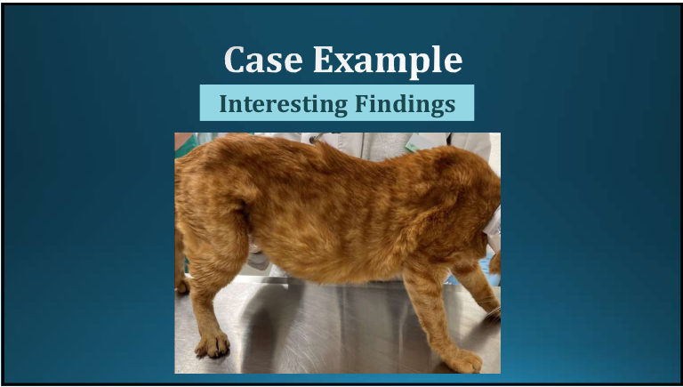
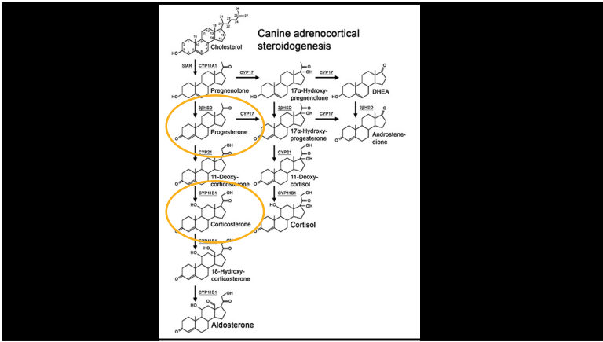
| 檢驗 | 結果 | 參考值 |
|---|---|---|
| 基礎皮質醇 | 21 nmol/L | 15–97 |
| ACTH 刺激後皮質醇 | 68 nmol/L（偏低） | 97–207 |
| 黃體素（progesterone） | 26 nmol/L | ≤2 |
| 皮質酮（corticosterone） | 205 nmol/L | ≤32 |
| 左側腎上腺 | 很小（<3 mm） | |
多激素分泌：醛固酮、黃體素、皮質酮
| 表現 | 可能的元兇 |
|---|---|
| 胰島素阻抗與糖尿病 | 黃體素 ± 皮質酮 |
| 皮膚變化 | 皮質酮 ± 黃體素 |
| 對側腎上腺萎縮、HPA 軸被抑制 | 可能是皮質酮 |
💡 皮質酮有糖皮質激素作用，會負回饋壓低 ACTH，所以對側腎上腺萎縮、ACTH 刺激後皮質醇反應不足。這不是 Addison，而是腫瘤分泌的「另一種糖皮質激素」取代了皮質醇。
結果
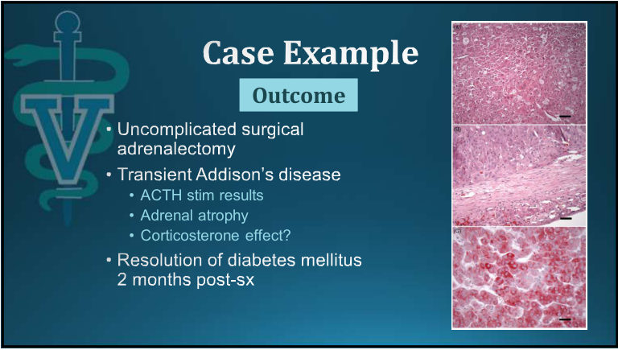
- 腎上腺切除手術順利、沒有併發症。
- 術後出現暫時性 Addison 氏症：
- ACTH 刺激試驗結果
- 腎上腺萎縮
- 皮質酮的作用？
- 術後 2 個月糖尿病緩解。
9. 黃體素與皮質酮：沒那麼少見
▾依醛固酮濃度分組（Langlois et al., JVIM 2021）
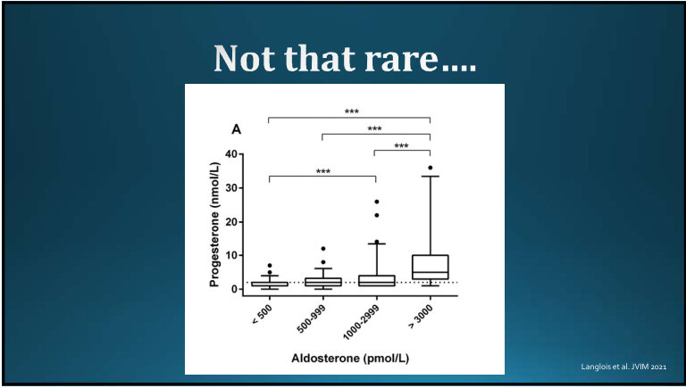
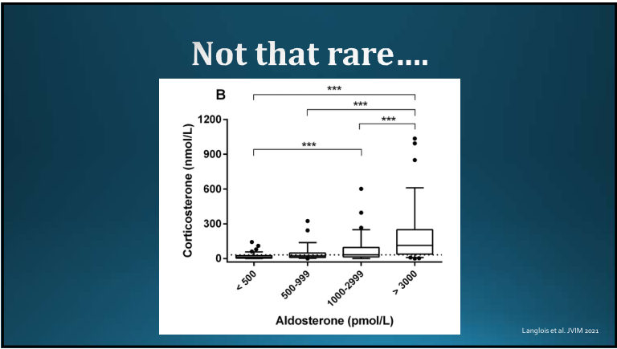
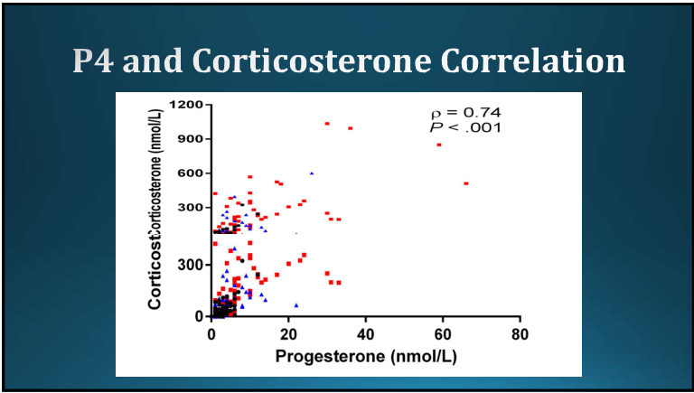
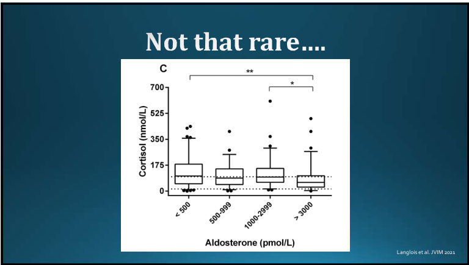
💡 📄 47 呼應 Mr. Hudson：皮質酮升高把 HPA 軸壓下去，皮質醇反而偏低。所以這類貓驗皮質醇看不出問題，要直接驗黃體素和皮質酮。
主要發現
- 將近 25% 的 PHA 貓，黃體素 >10 nmol/L。
- PHA 貓的皮質酮濃度高了 10 倍。
- → 多激素腎上腺腫瘤不罕見。
- → 激素升高的幅度大到可能有臨床意義。
10 隻分泌醛固酮＋黃體素腫瘤的貓（Harro et al., JVIM 2021）
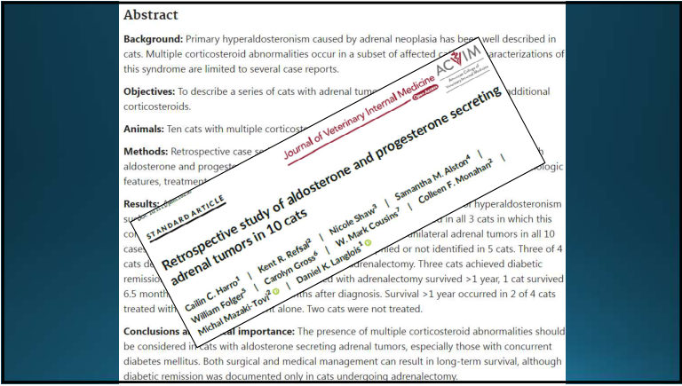
- 10 隻貓都是單側腎上腺腫瘤。
- 腎上腺切除的貓有 3 隻達到糖尿病緩解。
- 做腎上腺切除的貓存活 >1 年；只用內科治療的 4 隻中有 2 隻存活 >1 年；2 隻沒有治療。
- 結論：分泌醛固酮的腎上腺腫瘤，尤其合併糖尿病時，要考慮多種皮質類固醇異常。手術和內科都可能長期存活，但只有手術的貓出現糖尿病緩解。
重要觀念
- PHA 貓若有糖尿病或皮膚異常，要提高警覺：去驗黃體素。
- 對側腎上腺萎縮：
- 代表有糖皮質激素的作用
- 是術後腎上腺功能不足的風險因子
- 部分貓的糖尿病會緩解 → 強力支持手術。
10. 貓庫欣氏症
▾和狗的異同
相似
- 老貓（中位數 10 歲）
- PDH／ADH 的比例類似
不同
- 組織對糖皮質激素的敏感度不同，醫源性庫欣很少見
- 沒有類固醇誘導的 ALP 同功酶
臨床表現
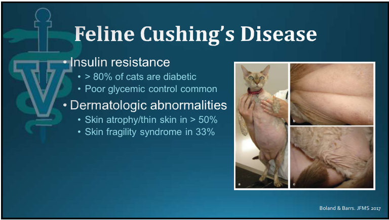
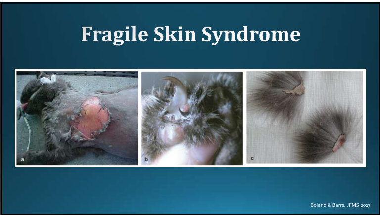
- 胰島素阻抗：>80% 有糖尿病，血糖常控制不好。
- 皮膚異常：>50% 皮膚萎縮變薄；33% 有皮膚脆弱症候群。
診斷檢測
| 檢測 | 敏感度 | 特異度 | 備註 |
|---|---|---|---|
| UCCR | 在貓價值不大 | ||
| LDDST | 高（>80%？） | 中等／未知 | dexamethasone 劑量是狗的 10 倍 |
| ACTH 刺激試驗 | 差（30–50%） | 中等到好（80%） | |
💡 貓的 LDDST 用 0.1 mg/kg dexamethasone IV（狗是 0.01 mg/kg），0、4、8 小時採血。
內科治療
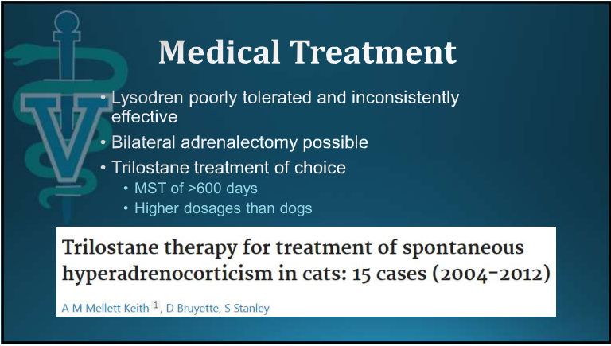
- Lysodren 耐受性差，效果也不穩定。
- 可以做雙側腎上腺切除。
- Trilostane 是首選：中位存活 >600 天；劑量比狗高。
11. 病例 Sam：分泌雄性素的腎上腺腫瘤
▾病史
Sam，7 歲 M/N DSH。
- 主訴：亂尿尿
- 18 個月來越來越嚴重，沒有排尿困難或尿淋漓。
- 尿在任何新東西、角落、床上。
- 行為改變：叫得比較多、比較黏人。
- 看了很多次、驗了很多次，常規血檢和尿檢都沒有明顯異常。
- 試過的治療：抗生素（懷疑 UTI）、環境調整、泌尿處方飼料。
關鍵發現：陰莖倒刺
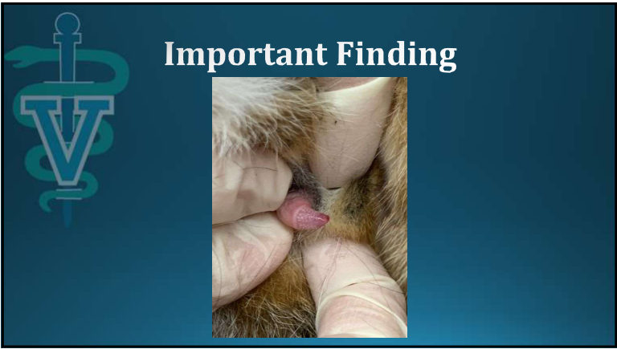
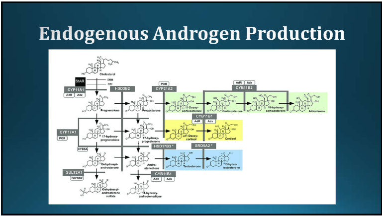
💡 貓的陰莖倒刺依賴雄性素，結紮後約 6 週就會退化。結紮公貓有倒刺，代表體內有雄性素來源：先想隱睪或結紮不完全，再想腎上腺。
進一步檢查
- CT：右側腎上腺 1.2 × 1.2 × 1.3 cm；左側 0.5 × 0.5 × 1.2 cm。
- ACTH 刺激試驗：皮質醇前後正常；睪固酮前後正常；androstenedione 前後都升高。
💡 只驗睪固酮會漏掉。Androstenedione 是睪固酮的前驅物，要特別點名去驗（MSU 的性激素套組有）。
結果
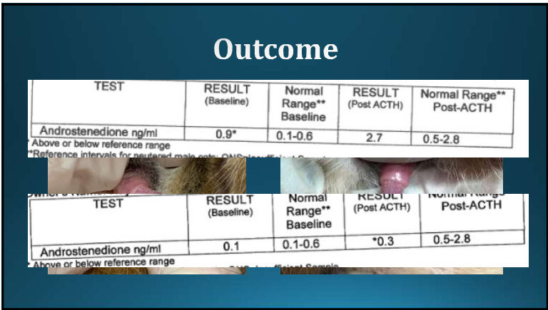
| 時間 | Androstenedione 基礎值 | ACTH 後 |
|---|---|---|
| 參考值 | 0.1–0.6 ng/mL | 0.5–2.8 ng/mL |
| 治療前 | 0.9（高） | 2.7 |
| 治療後 | 0.1 | 0.3（低） |
投影片背景是治療前後的陰莖照片，後來倒刺消失。💡 講義沒寫治療方式，從右腎上腺腫大推測是右側腎上腺切除；術後 ACTH 刺激反應偏低，也符合對側腎上腺被抑制。待逐字稿確認。
少見……但也許沒那麼少見（Erger et al., 8 隻分泌雄性素的腎上腺腫瘤）
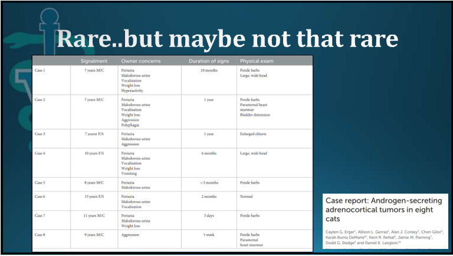
| 病例 | 訊號 | 飼主主訴 | 病程 | 理學檢查 |
|---|---|---|---|---|
| 1 | 7 歲 M/C | 亂尿、尿臭、叫、體重減輕、過動 | 18 個月 | 陰莖倒刺、頭大且寬 |
| 2 | 7 歲 M/C | 亂尿、尿臭、叫、體重減輕、攻擊、多食 | 1 年 | 陰莖倒刺、胸骨旁心雜音、膀胱脹大 |
| 3 | 7 歲 F/S | 亂尿、尿臭、攻擊 | 1 年 | 陰蒂肥大 |
| 4 | 10 歲 F/S | 亂尿、尿臭、叫、體重減輕、嘔吐 | 6 個月 | 頭大且寬 |
| 5 | 8 歲 M/C | 亂尿、尿臭 | >3 個月 | 陰莖倒刺 |
| 6 | 15 歲 F/S | 亂尿、尿臭、叫 | 2 個月 | 正常 |
| 7 | 11 歲 M/C | 亂尿、尿臭、體重減輕 | 3 天 | 陰莖倒刺 |
| 8 | 9 歲 M/C | 攻擊 | 1 週 | 陰莖倒刺、胸骨旁心雜音 |
💡 共通點：亂尿＋尿臭＋行為改變（叫、攻擊），公貓看倒刺、母貓看陰蒂、兩性都可能「頭大且寬」（像未結紮公貓的臉頰）。結紮過的貓出現發情行為，就要想到這個病。
Take-home 與參考資料
▾貓的功能性腎上腺腫瘤：一張表
| 類型 | 線索 | 關鍵檢驗 | 治療 |
|---|---|---|---|
| 醛固酮（PHA） | 低血鉀、高血壓、CK ↑、代謝性鹼中毒、頸部腹屈、視網膜病變 | 低血鉀時醛固酮 >1000 pmol/L＋超音波腎上腺腫塊 | 腎上腺切除；或 amlodipine＋補鉀＋spironolactone |
| 多激素（醛固酮＋黃體素／皮質酮） | PHA＋糖尿病／皮膚變化；對側腎上腺萎縮、ACTH 刺激反應低 | 黃體素、皮質酮 | 手術（可讓糖尿病緩解），術後注意暫時性 Addison |
| 皮質醇（庫欣） | 難控制的糖尿病、皮膚變薄、皮膚脆弱症候群 | LDDST（0.1 mg/kg）、ACTH 刺激、超音波 | Trilostane（劑量比狗高）；腎上腺切除 |
| 性激素（雄性素） | 亂尿、尿臭、叫、攻擊、陰莖倒刺、陰蒂肥大、頭大 | 性激素套組（androstenedione） | 腎上腺切除；trilostane 零星部分改善 |